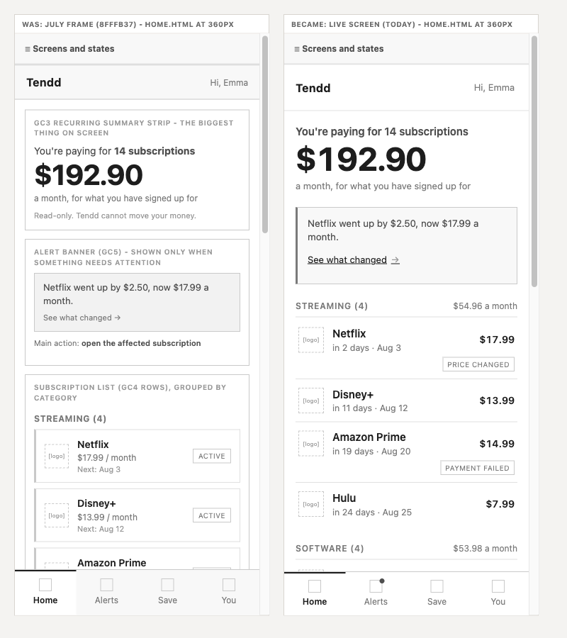
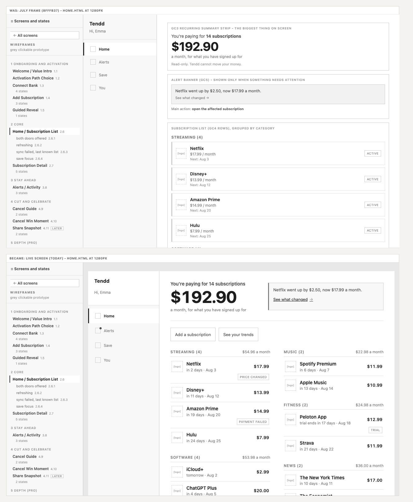
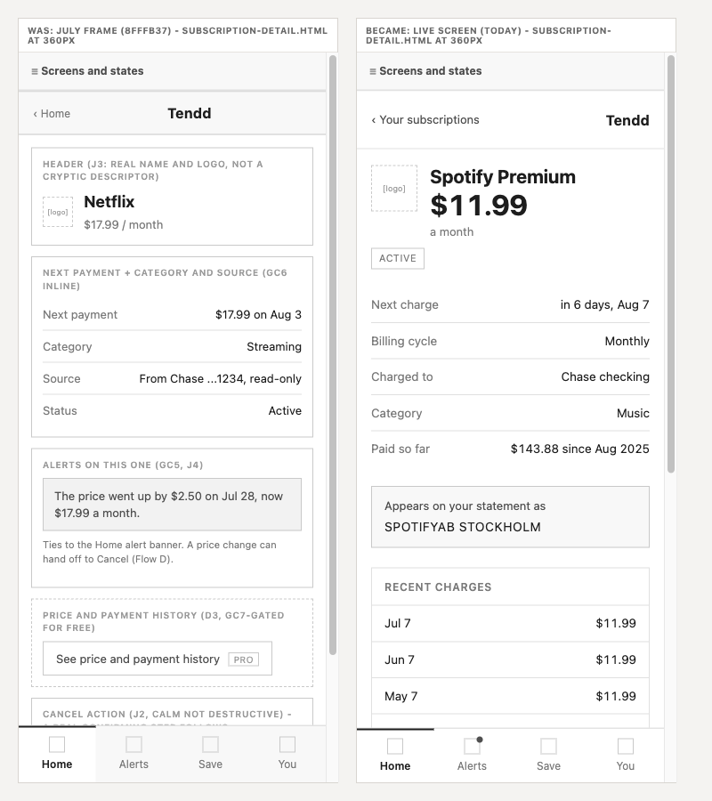
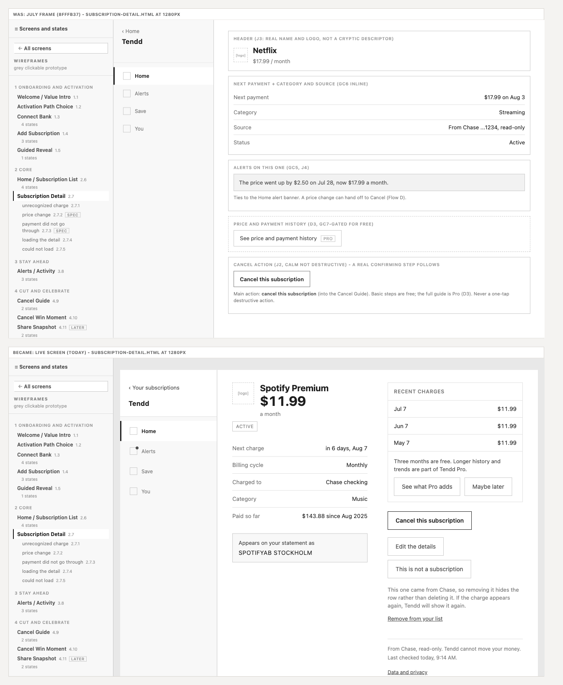
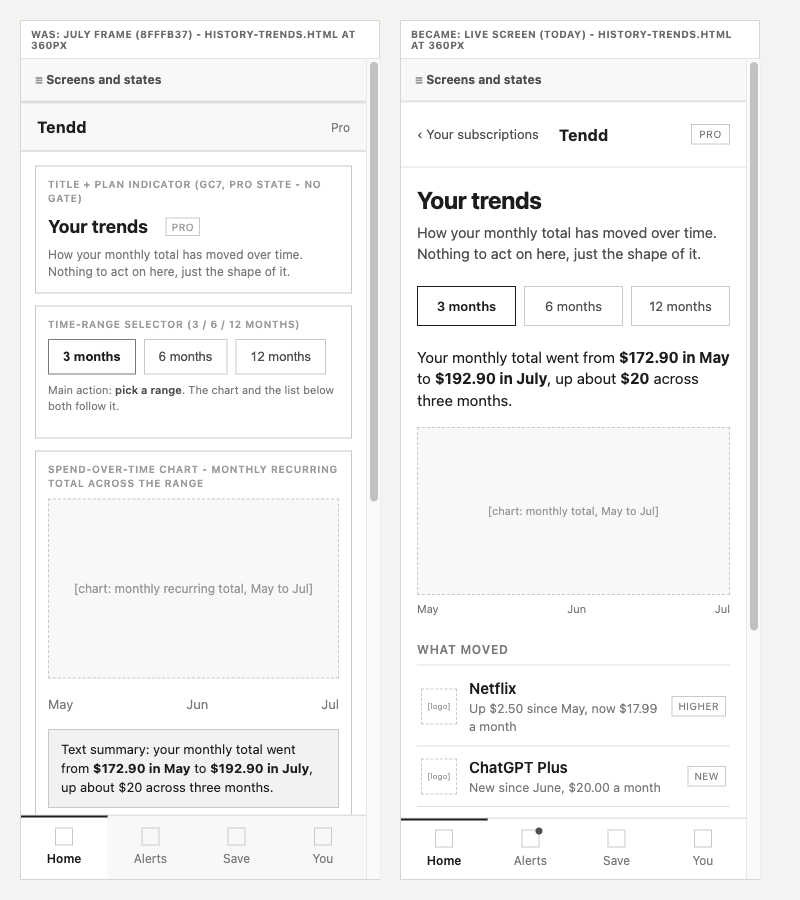
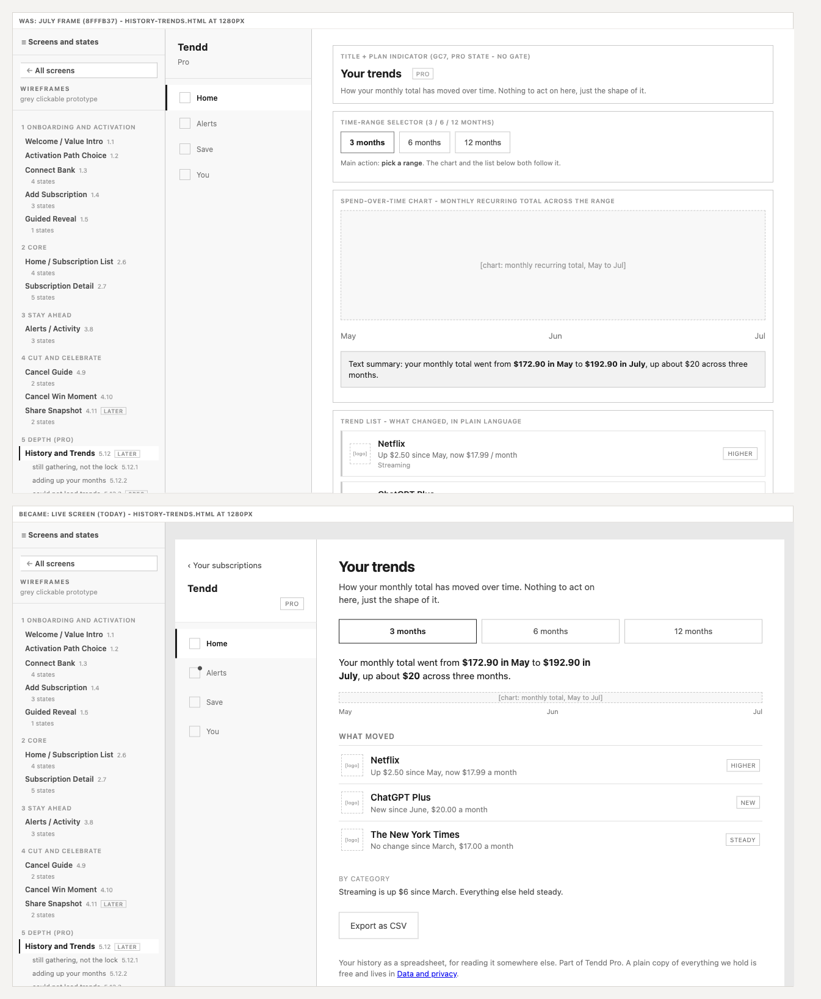

The grey clickable prototype: structure, not look. Semantic HTML, real copy, one page per state, and every screen a live screen at full viewport rather than a diagram of one. This page is the hub; the screens themselves carry their own panel.
Five flows from flows.md, each one a person doing one job. Flow A is the first flow and is built end to end; it ends at Home, which is the etalon. A screen appears once with its job and is marked as shared where a later flow reuses it. States live in the matrix below, not here: this section is the route.
Why Home is the etalon, and what it has to carry. Five of the seven global elements stand on it at once (GC1 the header, GC2 the tab bar, GC3 the summary strip, GC4 the row, GC6 the trust line), and the two that are missing are missing on purpose: GC5 belongs to Alerts, and GC7 is barred from the calm view by D3. An etalon is what later screens are measured against, so the screen that already contains most of the product is worth more than the one a person sees first. Ground: docs/decisions.md, 2026-08-10.
The strategic dimension, on three named elements. benchmark.md names one dimension and calls it an activation requirement rather than a nice-to-have: trust and first-time clarity. On Home it is three things you can point at, not a general feeling. GC4, the row: logo, real merchant name, amount, "in 2 days, Aug 3", with the raw statement string deliberately absent here and living on node 2.7 as the decoder line. The attention row: "Netflix went up by $2.50, now $17.99 a month", which says who did the thing rather than announcing that a change was detected. GC6, the trust line: "Read-only. Tendd cannot move your money", beside where the figures came from and when they were last checked. Written down on 2026-08-10: all three were built from the first day, the paragraph naming them was the check the stage owed.
flows.md draws four places where a person could get stuck, on purpose, because they are the honest failure points of this product and not an accident of the diagram. Each one is a defect with a fix, and this is where the fix has to become a real control on a real page. Linked on 2026-08-05, when the main flow was wired end to end.
| Flow | The dead end | Where a person hits it | What closes it, and on which page |
|---|---|---|---|
| A | Leaves without any list | The bank connection fails and the person declines both the retry and the manual path | connect-bank-error carries three exits, not two: Try again, Add them yourself, and the quiet Do this later, which lands on Home with both doors still open rather than on nothing. connect-bank-cancelled (node 1.3.4, drawn at the rebuild) does the same for the person who backs out inside Link |
| B | Abandons half-done, the manual entry trap | Adds two or three subscriptions by hand and stops | add-subscription says the list is saved as you go and how many are in it, so stopping is not losing. guided-reveal-empty offers Add a subscription and the same Do this later. The retreat is the As-Is default and the product survives it |
| C | Gives up, no in-app next step | The merchant's retention flow blocks the cancellation | cancel-guide-blocked is not an error page. It names the dark pattern as not the person's fault, gives four alternative steps, and offers I cancelled it and Remind me later. The Pro guide is secondary there, never the push at the frustration moment (D3) |
| D | No in-app next step for a failed payment | Told that a payment failed, with the fix living at the bank or the merchant | subscription-detail-payment-failed (node 2.7.3, drawn at the rebuild) states what usually happens next, says the money itself is fine, and carries the cancel guide, the correction and the way to the full alert list |
A wait is not a dead end, and it does not get a button. An edge a person takes is a real control on the screen. An edge the system takes, a sync finishing or a load resolving, is not: a button on a wait screen would give the screen an action the product does not have. Those edges are walked in the side panel, which is why every state of every screen is a row in it. Two pages have no link at all and both are correct: connect-bank-loading, where the chain has no tab bar and a sync has nothing for a person to do, and upgrade-processing, where a way out in the middle of a charge is exactly what the screen must not offer. The check that makes this falsifiable rather than a story: every MVP base screen is reachable from the front door by clicking, and the pages that are not are state pages, each produced by a condition rather than by a tap. Four pages are deliberately unreachable by click, and every one of them is a decision showing up in the link graph rather than a broken route. All four are reached here from the side panel. Share Snapshot is node 4.11, LATER under D-Share, and it lost its entry when the share block came off cancel-win: an MVP screen cannot lead to a screen that is not in MVP. History and Trends unlocked is a Pro screen, and the canonical person is on Free, so every "See your trends" link goes to the locked state and the unlocked page is what opens after the gate. Two more joined them on 2026-08-10, for the same reason in two directions. The plan you are on is node 5.13.3 and it can only be opened by somebody already on Pro, which the canonical person is not, so Settings routes "manage plan" to the gate. You, with no account yet is node 6.16.1, the You tab of somebody who came in through the manual path and never made an account, which the canonical person also is not: she connected Chase, so her Settings is the one with an email on it. A prototype has one person in it, and the states that belong to a different person are honest to draw and dishonest to link.
The four system states across all 17 screens. This is the floor, not the set: it proves no screen quietly lost an error or an empty. Every dash carries its reason, because "this screen has no error state" and "we forgot the error state" look identical without one.
| # | Screen | empty | error | loading | success | Why a dash is a dash |
|---|---|---|---|---|---|---|
| 1 | Welcome / Value Intro 1.1 | - | - | - | yes | A static value screen. Nothing loads, nothing can fail, nothing can be empty |
| 2 | Activation Path Choice 1.2 | - | - | - | yes | An offline choice between two doors; no data is touched |
| 3 | Connect Bank 1.3 | yes | yes | yes | yes | |
| 4 | Add Subscription 1.4 | yes | yes | yes | yes | |
| 5 | Guided Reveal 1.5 | yes | - | - | yes | Upstream failures belong to Connect Bank and Add Subscription; the reveal only runs on a list that already exists |
| 6 | Home / Subscription List 2.6 | yes | yes | yes | yes | |
| 7 | Subscription Detail 2.7 | - | yes | yes | yes | One object is either there or it is not. "No data" on this screen is the unrecognized charge, which is a domain state and not an empty one |
| 8 | Alerts / Activity 3.8 | yes | yes | yes | yes | The empty state here is the best state in the app, not an absence |
| 9 | Cancel Guide 4.9 | yes | yes | - | yes | The steps are text we already hold; there is no fetch to wait for |
| 10 | Cancel Win Moment 4.10 | - | - | - | yes | The screen only exists after a completed action, and its numbers are already known |
| 11 | Share Snapshot 4.11 | - | yes | yes | yes | The card is generated from two numbers the product already has, so it cannot be empty |
| 12 | History and Trends 5.12 | yes | yes | yes | yes | |
| 13 | Upgrade / Tendd Pro 5.13 | - | yes | yes | yes | A plan list cannot be empty. Its error is a payment that did not go through, and its loading is the payment being processed |
| 14 | Connections / Accounts 6.14 | yes | yes | yes | yes | |
| 15 | Data and Privacy 6.15 | - | - | - | yes | A statement of what we hold and two controls. Nothing to load, nothing to be empty |
| 16 | Settings / Profile 6.16 | - | - | - | yes | A list of doors. The skeleton while preferences load is chrome, not a destination. The account-less variant is no longer waiting on the auth model: it is node 6.16.1, a domain state and not an empty one, because the list is full and only the account is missing |
| 17 | Sign In 1.6 | - | yes | - | yes | Added 2026-08-10. Nothing loads and nothing can be empty: one field and one action. Its error is node 1.6.2, an expired link, which is the only way this screen can fail |
Where the floor understates the product. Connect Bank shows four system states here and has a fourth state that is none of them: a person who opened the bank screen and came back without connecting. Connections shows three and has a chooser dialog. Subscription Detail shows an empty column of dashes and carries three domain states. The floor is a check for gaps, and the real set is the next section.
Every page of the prototype, grouped by IA cluster, rendered from _nav.js, the same registry the screen panel uses. There is no second list: a node with no page still has a row here, muted and unlinked, so an unbuilt state is visible rather than absent. Each state links to the page that renders it, and each screen links to its IA node.
| Round | Screens | Pages | Built today |
|---|
The contract every screen and every subagent follows, from docs/conventions.md. It is shown here because a rule that lives only in a markdown file is a rule only the model reads.
Nothing in the conventions is invented at this stage. Each line names its owner, and a gap is fixed in the owner first and rendered second.
| What | Owner |
|---|---|
| Screens, node numbers, scope | ia/docs/sitemap.md, which owns numbering |
| Which blocks a screen has, in what order | ia/docs/nodes/<node>.md, tracing to the block bank |
| The seven global elements | ia/docs/nodes/globals.md, with what each must never do |
| States and their exits | the States section of each node file, against flows.md |
| Every interface string | voice/docs/microcopy.md |
| Accessible names, focus, live regions | ia/docs/accessibility.md |
| Grey tokens | wireframes/_wf.css |
A-E SEO copy exists for node 1.1 only, the one public indexed screen. Every other node is noindex and carries no A-E block by design, so the text of every app screen comes from the microcopy inventory. That is a deliberate difference from the generic instruction "take the text from the A-E block".
_wf.css. No colour, no brand, no accent._wf.css, so each screen carries its CSS inline. That is temporary by construction.var(--...); a missing variable is reported as "variable, value, why", not added._wf.css, the same two-occurrence test stage 07 uses to decide what is a component./* INLINE: <screen> :: for consolidation into _wf.css */, so the parent finds them mechanically._wf.css scoped under .app: strictly additive while the July .phone frame still had pages. The last of them left it in round 2, and the frame was deleted the same day.SPOTIFYAB STOCKHOLM to Spotify Premium. The failed payment: Amazon Prime, on Jul 20, at $14.99.wireframes/.<screen>.html is the base page and is the success state.<screen>-<state>.html is one page per state, named after the state itself, not after the nearest system word. A name not in the matrix does not get created.index.html is the product home page, the public Welcome landing. The hub is this page. The two are never swapped.flows.md and points at a page that is really here._nav.js: cluster, screen with its node number, its states, an accordion open on the current screen only, and a quiet cross-link to the IA node it renders._wf.css.The stage opened owing eight pages and carrying four file names that argued with their own states. It closed on a critique taken on two instruments, and then on round 2, which took the last three screens off the July frame and drew the four states nobody had drawn yet. On 2026-08-10 one more round measured the width the screens were being checked at. Nothing is open and nothing is deferred: 58 of 58. Round 4 re-opened the freeze a second time on 2026-08-20, on the founder's own row: node 2.6 named four states and every one of them was about the CONNECTION rather than the COUNT, so the ladder got its missing rungs (one subscription, a short list), and node 5.13 got the renewal that fails on an account already paying (Pro did not renew). Each carries the founder's decision inside the file it changed, which is what the freeze asks for. The full log, including the findings that did not survive a second reading, is critique.md.
The pairs, and why they are dated later than the work. This stage never took its before and after screens at the time, which is the one gate it skipped. They are shot here on 2026-08-10 from the pre-rebuild commit (8fffb37, where the July .phone frame was still live) in a git worktree, beside today's pages at the same widths. Three screens, two widths each: the etalon, the screen with the most states, and one from the last batch. What to look for: the captions naming each zone are gone, "ACTIVE" on every row became a quiet word shown only when it is not the default, "$17.99 / month, Next: Aug 3" became "in 2 days, Aug 3" with the days leading, the desktop stopped being one column of boxes and became a dashboard, and on Your trends the sentence that carries the fact moved above the chart, which was the type H decision of the bank round.






| Was | Found by | Became |
|---|---|---|
| The stage around every screen carried a 16px gutter at every width, so at a 360 viewport the app was 313px wide. The 360 check that all 50 pages passed was really being run at 313, and a row that breaks at a true 360 had 13 per cent of slack. A screen that does not reach the edge of the viewport is also the mockup frame this stage removed, drawn in padding instead of in a border | Claude | Below 460px, the width where the app already switches to phone chrome, the stage gives the gutter back: the screen fills the viewport. Measured after the fix, 345 of 345 on all 49 app pages, no horizontal scroll and no element crossing the edge. The landing keeps its own edge-to-edge stage and the desktop layout is untouched |
Round 2, 2026-08-05. The three LATER screens (Share Snapshot, History and Trends, Upgrade) each carried the same line in their node file: a bank round precedes the build. So it ran first, as types H, I and J in the block bank: 32 decisions, 12 of them refusals of patterns the category agrees on unanimously (a comparison table that has to invent a lack in Free, a trial that converts silently, a countdown, colour that judges). Then the screens were drawn, the .phone frame was deleted from _wf.css, and the map gained node 5.12.4, the locked view of the trends screen: the canonical person is on Free everywhere else in the product, and node 5.13 says out loud that she came to the upgrade screen "from Your trends", which needs a gate on that screen to be true.
| Node | File | Became | Why it exists |
|---|---|---|---|
| 1.3.4 | connect-bank-cancelled.html | built | Plaid Link returns four outcomes, not three. A person who opened the bank screen and backed out had nowhere to land |
| 2.7.2 | subscription-detail-price-change.html | built | The state that carries J4 on the detail screen |
| 2.7.3 | subscription-detail-payment-failed.html | built | Named in the IA critique as a dead end: informed, with no next step |
| 6.14.3 | connections-add-source.html | built | The chooser dialog, which is the FLAG 2 resolution |
| 6.15.1 | data-privacy-delete-confirm.html | built | The two-door dialog. It lived inside the page and could not be walked as an interruption |
| 5.12.3 | history-trends-error.html | built | LATER, drawn in round 2 with its screen |
| 5.13.1 | upgrade-processing.html | built | LATER, drawn in round 2 with its screen |
| 5.13.2 | upgrade-payment-failed.html | built | LATER, drawn in round 2 with its screen |
| 5.12.4 | history-trends-locked.html | built | Numbered in the map on 2026-08-05 and drawn the same day. It is the only view of the trends screen a free person can have, and node 5.13 says out loud that the person came to the upgrade screen "from Your trends", which needs a gate here to be true |
| Was | Is now | Why |
|---|---|---|
subscription-detail-empty | subscription-detail-unrecognized | Node 2.7.1, and node 2.7 has no empty state at all |
cancel-guide-empty | cancel-guide-no-guide | Node 4.9.1. Nothing on it is empty; it carries the general steps |
cancel-guide-error | cancel-guide-blocked | Node 4.9.2. Nothing failed on our side: the merchant blocked the person |
connections-error | connections-reconnect | Node 6.14.2. An expired connection is maintenance and not an error, and the file name was arguing the opposite |
| Was | Found by | Became |
|---|---|---|
| On Home, a status badge took the width from the name beside it: "Amazon Prime" broke into two lines and "in 19 days · Aug 20" broke after "Aug". On the etalon screen, at 360 | Claude | GC4 gives the name and its date a floor of 160px and the badge drops to its own line below them instead of squeezing |
| On Add Subscription while the catalogue loads, the preset tiles ran 15px past the edge of a 360 screen, because each placeholder line was a fixed pixel width | Claude | Placeholder widths are a scale in _wf.css, in percent, so they narrow with the column |
| On Guided Reveal, two counters said "of 3" and meant different things: the header said step 3 of the chain, the first line under it said step 1 of the reveal | Claude | The chain counter is gone from that one screen. The chain ends when the reveal starts, so the counter that stays is the reveal's own |
| On Cancel Guide, three sentences were set as data values, right-aligned against their labels, so each wrapped into a ragged column at 360 | Claude | A facts block whose answers are sentences stacks the pair and reads left to right |
| This page named Peloton as the failed payment while the canonical set, the alert and the state page all say Amazon Prime | Codex | Corrected to Amazon Prime, Jul 20, $14.99, in section 5 above |
Twenty-nine literal CSS values still sat in style= attributes on the rebuilt pages, four of them the same rule on four screens | Codex | All of them are named classes in _wf.css. Zero inline styles on the 39 MVP pages and on the landing |
conventions.md and microcopy.md still described the Jul 2 date on Alerts as an open carried fix, which the fan-out had already closed | Codex | Both entries closed, with the date that is actually on the screen |
CLAUDE.md sent the product home page to "node 0.0 from the flows", and no node 0.0 exists anywhere in the map | Codex | The rule names node 1.1, which is Welcome |
Carried in from the IA work, and closed while the screens were rebuilt.
.phone block left _wf.css with them: no page uses it, so it is not kept "in case".